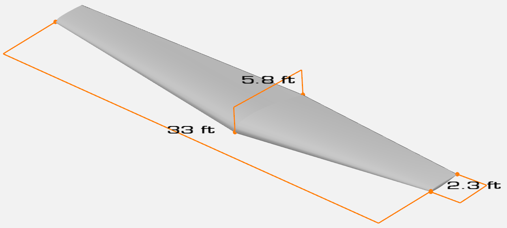

Wing Planform Sizing#
This section performs preliminary estimation of various wing planform variables for the example airplane. These variables include: surface area, aspect ratio, sweep, taper ratio, dihedral angle, incidence angle, and twist angle. At this stage of the design, empirical methods are used for determining these variables but it is recommended to use carpet plots or numerical optimization to further refine these variables. Note that surface area and aspect ratio are already known from initial weight estimation and constraint analysis. Following sub-sections describes these variables, along with its value for the example aircraft. For a detailed discussion about each of these quantities, please refer to lecture notes.
Sweep#
Sweep (\(\Lambda\)) is desired for high subsonic, transonic, and supersonic speeds where shock formation has adverse effects on the aerodynamic characteristics of the wing. However, it does increase wing weight and decreases the lift. Since the example airplane is going to fly at low speeds (\(M \sim 0.3\)), the quarter chord sweep is kept at \(0^{\circ}\). This is corroborated from the historical data presented in Raymer (Figure 4.2) and Roskam Part 2 (Table 6.3). One can also make leading edge sweep equal to zero. The \(n^{th}\) and \(m^{th}\) fraction chord sweep angles can be linked using
where \(\lambda\) is the taper ratio. So, if the aspect ratio and taper ratio are known, then sweep at a given chord fraction can be computed easily.
Taper Ratio#
Taper ratio (\(\lambda\)) is defined as
where \(C_{tip}\) and \(C_{root}\) are the tip and root chord, respectively. Taper ratio affects the spanwise lift distribution which governs the induced drag. It is shown that elliptical lift distribution results in lowest induced drag. This distribution can be generated using elliptical wings but it is difficult to manufacture. Hence, a simple trapezoidal wing with an appropriate taper ratio can be used for generating a lift distribution that is close to elliptical. As recommended in Section 4.3.3 in Raymer, wings with no sweep usually have a taper ratio of 0.4, which is close to the historical values reported in Table 6.3 of Roskam Part 2. Thus, the taper ratio of 0.4 is selected for the example aircraft. Once taper ratio is finalized, the root chord and tip chord can be computed as
where \(b\) is the span of the wing. The mean aerodynamic chord (MAC) can be computed as
Furthermore, the spanwise location of the MAC can be calculated using
The MAC and \(y_{mac}\) can be used to identify the location of mean aerodynamic center on the wing, which is used later in stability calculations.
NOTE: If the aspect ratio, surface area, span, and taper ratio are known for a tail surface, above equations for computing root chord, tip chord, mac, and \(y_{mac}\) can be used.
Wing Fuel Volume#
Once the wing planform variables are estimated, it is important to compute the amount of fuel wing can hold. Torenbeek provides an empirical equation for estimating wing fuel volume (\(V_{wf}\)). It is given as
where \(\tau\) is \((t/c)_{tip}/(t/c)_{root}\) and \(t/c\) is the thickness ratio of the airfoil. The value obtained from the above equation should be compared to the required fuel determined in initial weight estimation. If there is a large discrepancy between the values (more than 15-20%), then some of the wing planform variables should be updated.
Other variables#
Wing twist is primarily used for two things – preventing tip stall and to modify the spanwise lift distribution. Wing twist can be classified as geometric and aerodynamic twist. Geometric twist is the actual change in the local airfoil angle of attack, while the aerodynamic twist refers to the change in the zero-lift angle of attack as one moves along the span of the wing. A geometrical twist of \(-3^{\circ}\) (washout) can provide good stall characteristics, and hence, is used for the example airplane (Raymer Section 4.3.4). Plese refer to the lecture notes for more details.
Wing incidence can be defined as the pitch angle between the wing root and fuselage axis. This incidence can be determined for minimum drag during the cruise. Essentially, wing should be at the correct angle of attack to generate enough lift to balance the weight while fuselage is at minimum drag. For a passenger airplane, it is important that the fuselage floor is level during the cruise. For the example airplane, the incidence angle is set to \(2^{\circ}\) based on Section 4.3.5 in Raymer and the historical data reported in Table 6.3 in Roskam Part 2.
Wing dihedral is the angle made by the wing with respect to the horizontal axis when viewed from front. Dihedral needs to be carefully determined since it affects the rolling motion and the stability of the airplane. Wing sweep and wing position relatively to fuselage also has additive effects on dihedral. There is no simple way to determine the dihedral at this stage of the design. Based on Table 4.2 in Raymer and Table 6.3 in Roskam Part 2, a dihedral of \(5^{\circ}\) is selected for the example airplane.
Airfoil#
Airfoil needs to be determined carefully since it affects the overall aerodynamic efficiency during all phases of flight. Typically, five or six series airfoil is used for subsonic flight. It is recommended to perform airfoil analysis using XFOIL or XFLR5 across a range of appropriate Reynolds number. Note that the Reynolds number should be computed using mean aerodynamic chord determined using one of the above equations. The airfoils should be compared based on lift, drag, and pitching moment curves, along with drag polar and stall characteristics. Refer to lecture notes and Section 4.2 in Raymer for more details. For the example airplane, NACA 23018 and 23009 is used as the root and tip airfoil, respectively, based on Table 8.3 in Roskam Part 2.
Summary#
Below block of code computes some of the variables described in this section:
import numpy as np
# Define variables
A = 8
S = 134 # sq ft
sweep_qc = 0 # deg
taper_ratio = 0.4
thickness_ratio_root = 0.18
thickness_ratio_tip = 0.09
tau = thickness_ratio_tip / thickness_ratio_root
# Span
b = (A*S)**0.5 # ft
# LE Sweep
sweep_le = np.atan( np.tan(0) + 4 * (0.25) * (1 - taper_ratio) / A / (1 + taper_ratio) ) * 180 / np.pi
# root chord
c_root = 2*S/b/(1 + taper_ratio) # ft
# tip chord
c_tip = taper_ratio * c_root # ft
# MAC
mac = 2 * c_root * (1 + taper_ratio + taper_ratio**2) / 3 / (1 + taper_ratio)
# y_mac
y_mac = b * (1 + 2*taper_ratio) / 6 / (1 + taper_ratio)
# wing fuel capacity
wing_fuel_volume = 0.54 * S**2 * thickness_ratio_root * (1 + taper_ratio * tau**0.5 + tau * taper_ratio**2) / b / (1 + taper_ratio)**2
# Print values
print(f"Sweep leading edge: {sweep_le:.2} deg")
print(f"Root chord: {c_root:.2} ft")
print(f"Tip chord: {c_tip:.2} ft")
print(f"MAC: {mac:.2} ft")
print(f"y_mac: {y_mac:.2} ft")
print(f"Wing fuel volume: {wing_fuel_volume:.0f} ft^3")
Sweep leading edge: 3.1 deg
Root chord: 5.8 ft
Tip chord: 2.3 ft
MAC: 4.3 ft
y_mac: 7.0 ft
Wing fuel volume: 37 ft^3
Below table summarizes the output of wing planform sizing:
Parameter |
Value |
Source |
|---|---|---|
Aspect ratio |
8 |
initial weight estimation |
Surface area |
134 \(\text{ft}^2\) |
constraint analysis |
Span |
33 ft |
calculated |
Sweep leading edge |
3 degree |
calculated |
Sweep quarter chord |
0 degree |
historical data & flight regime |
Taper ratio |
0.4 |
historical data |
Root chord |
5.8 ft |
calculated |
Tip chord |
2.3 ft |
calculated |
MAC |
4.3 ft |
calculated |
Span location of MAC |
7 ft |
calculated |
Wing fuel volume |
37 cu ft |
calculated |
Wing twist |
\(-3^{\circ}\) |
historical data |
Wing incidence |
\(2^{\circ}\) |
historical data |
Wing dihedral |
\(5^{\circ}\) |
historical data |
Root airfoil |
NACA 23018 |
historical data |
Tip airfoil |
NACA 23009 |
historical data |
Based on the above table, the wing fuel capacity is 1770 lbs (computed using density of 100LL Avgas at low temperature) which is much higher than the required fuel of 1060 lbs. Below image shows OpenVSP model of the wing:

This concludes the wing planform sizing section. Note that many of these wing planform variables determine the aerodynamic efficiency and handling quality of the airplane, and hence, should be refined using carpet plots and/or numerical optimization in the later stages of design.